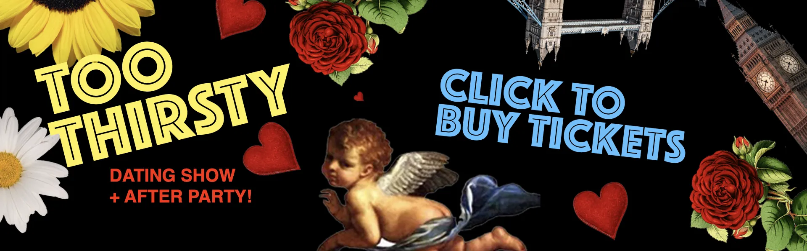

Frequently Asked Questions
What is Too Thirsty?
Too Thirsty is a live dating show and party. Picture it: one girl is on stage with two guys. She can't see them. They can't see her. She asks them questions to decide who is the best match for her. Then comes the big reveal. Does she still fancy him? Does she prefer one of the others instead? Do they all give her the ick?.
After the show finishes, we host an After Party where you can mingle with other singles.
How do I become a Contestant?
Buy a ticket and check the box that says you want to be a Contestant. After that, send us a WhatsApp message with a 1 minute voice note saying why you want to be on the show. Also state your age. Lastly, please send us a pic or a link to your social media.
Is this real? Do people actually get dates on stage?
Yes. 100% of our contestants have gone on a date.
What is the vibe?
Very wholesome. Also funny.
Are there prizes?
Yes. Contestants can win prizes.
What is the itinerary of the show?
Check your ticket, but usually the show starts at 8, finishes at 9:30 with a party after.
Where is the party?
Same location as the show.
When is your next show?
Click on “Buy Tickets” on our website toothirsty.com to see upcoming show dates.
Do you offer refunds?
No.
I’m broke. Do you offer discounted tickets?
Sometimes. Send us a DM for details.
Are the shows filmed? Can I watch them online?
Yes. The shows are filmed and we post them on YouTube.
I’m from the press. Can I cover you?
Please contact us at team@toothirsty.com.
Do you welcome stag dos or hen dos?
Yes.
How can I contact you?
Email us at team@toothirsty.com or call +44 7544 856788. You can also message us on TikTok or Instagram.
Click here to go to WhatsApp:
https://wa.me/447544856788